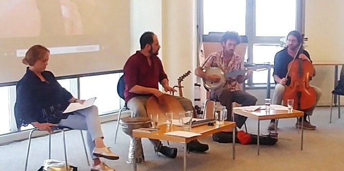

המפגש נפתח במעגלי שיח ובהם דנו המשתתפים בשאלת מקומו של הצל בעשייה התרבותית בנגב. אחר כך התכנסה הקבוצה למפגש מופע-שיחה-סדנה בנושא "קולות רבים בצל האחד", עם היוצר יאיר הראל – נגן כלי הקשה המתמחה במוזיקה מסורתית יהודית, מוזיקה מזרחית קלאסית ומוזיקה עכשווית, וחברים מאנסמבל תפילאלת – הרכב המשלב שירה ופיוטים יהודיים מזרחיים עם מוזיקה ישראלית מודרנית באמצעות כלי נגינה מתרבויות העולם. המפגש עסק במקורות הפיוט ובהיותו שער ליחיד ולקהילה שבאמצעותו אפשר ליצור תודעה המהדהדת זיכרון היסטורי תרבותי משותף בשיח, עם חוויית הרגע הנוכחי של יחד.
ההרכב ניגן ושר טקסטים בולטים במסורת היהודית, בהם "יחיד רם בשלום" מאת ר' ישראל נג'ארה ו"ידיד נפש" מאת ר' אלעזר אזכרי. יצירות אלה היוו הזדמנות לשוחח על ההשפעה המקומית החיצונית על היצירה היהודית של קהילה היושבת בתוך סביבה תרבותית אחרת, דוגמת החברה היהודית שהתגוררה במרוקו והושפעה מהמגרב, כמשתקף בפסוק ששרו "יוֹדוּךָ עַמִּים אֱלֹהִים: יוֹדוּךָ, עַמִּים כֻּלָּם" מתוך "למנצח בנגינות" תהילים פרק ס"ז. המפגש בחן את מקומה של המוזיקה גם כגשר המחבר בין תרבויות.
סדרת המפגשים, בהובלתן של
ד"ר רות קלדרון, חברת סגל אורחת וד"ר
עדי ניר שגיא, מנהלת מרכז מנדל למנהיגות בנגב, היא פורום של מנהיגים ודמויות מפתח מאזור הנגב המתכנס ללימוד ולהשראה על תרבות ויצירה מקומית. השיח הער מהווה מפגש עוצמתי וחשוב של פיתוח מנהיגות תרבות נגב. למפגשים הגיעו דמויות מפתח מובילות מהנגב הפועלות ברשויות המקומיות, באקדמיה, במוסדות ציבור ובגופי תרבות בתחומי היצירה והאמנות המקומית.

{kind=link}